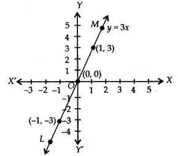

NCERT Solutions for Class 9 Maths Chapter 4 Linear Equations in Two Variables Ex 4.1 are part of NCERT Solutions for Class 9 Maths. Here we have given NCERT Solutions for Class 9 Maths Chapter 4 Linear Equations in Two Variables Ex 4.1.
NCERT Solutions for Class 9 Maths Chapter 4 Linear Equations in Two Variables Ex 4.1
Ex 4.1 Class 9 Maths Question 1.
The cost of a notebook is twice the cost of a pen. Write a linear equation in two variables to represent this statement.
(Take the cost of a notebook to be Rs. x and that of a pen to be Rs.y).
Solution:
Let the cost of a notebook = Rs. x
and the cost of a pen = Rs. y
According to the condition, we have
[Cost of a notebook] =2 x [Cost of a pen]
i. e„ (x) = 2 x (y) or, x = 2y
or, x – 2y = 0
Thus, the required linear equation is x – 2y = 0.
Ex 4.1 Class 9 Maths Question 2
Express the following linear equations in the form ax + by + c = 0 and indicate the values of a, b and c in each case:
(i) 2x + 3y = \(9.3\overline { 5 }\)
(ii) \(x-\frac { y }{ 5 } -10\quad =\quad 0\)
(iii) – 2x + 3y = 6
(iv) x = 3y
(v) 2x = -5y
(vi) 3x + 2 = 0
(vii) y – 2 = 0
(viii) 5 = 2x
Solution:
(i) We have 2x + 3y = \(9.3\overline { 5 }\)
or (2)x + (3)y + (\(-9.3\overline { 5 }\) ) = 0
Comparing it with ax + by +c= 0, we geta = 2,
b = 3 and c= –\(9.3\overline { 5 }\) .
(ii) We have \(x-\frac { y }{ 5 } -10\quad =\quad 0\)
or x + (- \(\frac { 1 }{ 5 }\)) y + (10) = 0
Comparing it with ax + by + c = 0, we get
a =1, b =- \(\frac { 1 }{ 5 }\) and c= -10
(iii) Wehave -2x + 3y = 6 or (-2)x + (3)y + (-6) = 0
Comparing it with ax – 4 – by + c = 0,we get a = -2, b = 3 and c = -6.
(iv) We have x = 3y or (1)x + (-3)y + (0) = 0 Comparing it with ax + by + c = 0, we get a = 1, b = -3 and c = 0.
(v) We have 2x = -5y or (2)x + (5)y + (0) = 0 Comparing it with ax + by + c = 0, we get a = 2, b = 5 and c = 0.
(vi) We have 3x + 2 = 0 or (3)x + (0)y + (2) = 0 Comparing it with ax + by + c = 0, we get a = 3, b = 0 and c = 2.
(vii) We have y – 2 = 0 or (0)x + (1)y + (-2) = 0 Comparing it with ax + by + c = 0, we get a = 0, b = 1 and c = -2.
(viii) We have 5 = 2x ⇒ 5 – 2x = 0
or -2x + 0y + 5 = 0
or (-2)x + (0)y + (5) = 0
Comparing it with ax + by + c = 0, we get a = -2, b = 0 and c = 5.
NCERT Solutions for Class 9 Maths Chapter 4 Linear Equations in Two Variables (दो चरों में रैखिक समीकरण) (Hindi Medium) Ex 4.1

NCERT Solutions for Class 9 Maths Chapter 4 Linear Equations in Two Variables Ex 4.2
Question 1
Which one of the following options is true, and why?
y = 3x + 5 has
(i) a unique solution,
(ii) only two solutions,
(iii) infinitely many solutions
Solution:
Option (iii) is true because for every value of x, we get a corresponding value of y and vice-versa in the given equation.
Hence, given linear equation has an infinitely many solutions.
Question 2
Write four solutions for each of the following equations:
(i) 2x + y = 7
(ii) πx + y = 9
(iii) x = 4y
Solution:
(i) 2x + y = 7
When x = 0, 2(0) + y = 7 ⇒ y = 7
∴ Solution is (0, 7)
When x =1, 2(1) + y = 7 ⇒ y = 7 – 2 ⇒ y = 5
∴ Solution is (1, 5)
When x = 2, 2(2) + y =7y = 7 – 4 ⇒ y = 3
∴ Solution is (2, 3)
When x = 3, 2(3) + y = 7y = 7 – 6 ⇒ y = 1
∴ Solution is (3, 1).
(ii) πx + y = 9
When x = 0, π(0) + y = 9 ⇒ y = 9 – 0 ⇒ y = 9
∴ Solution is (0, 9)
When x = 1, π(1) + y = 9 ⇒ y = 9 – π
∴ Solution is (1, (9 – π))
When x = 2, π(2) + y = 9 ⇒ y = 9 – 2π
∴ Solution is (2, (9 – 2π))
When x = -1,π(-1) + y = 9 ⇒ y = 9 + π
∴ Solution is (-1, (9 + π))
(iii) x = 4y
When x = 0, 4y = 1 ⇒ y = 0
∴ Solution is (0, 0)
When x = 1, 4y = 1 ⇒ y = \(\frac { 1 }{ 4 }\)
∴ Solution is (1,\(\frac { 1 }{ 4 }\) )
When x = 4, 4y = 4 ⇒ y = 1
∴ Solution is (4, 1)
When x = 4, 4y = 4 ⇒ y = -1
∴ Solution is (-4, -1)
Question 3
Check which of the following are solutions of the equation x – 2y = 4 and which are not:
(i) (0,2)
(ii) (2,0)
(iii) (4, 0)
(iv) (√2, 4√2)
(v) (1, 1)
Solution:
(i) (0,2) means x = 0 and y = 2
Puffing x = 0 and y = 2 in x – 2y = 4, we get
L.H.S. = 0 – 2(2) = -4.
But R.H.S. = 4
∴ L.H.S. ≠ R.H.S.
∴ x =0, y =2 is not a solution.
(ii) (2, 0) means x = 2 and y = 0
Putting x = 2 and y = 0 in x – 2y = 4, we get
L.H:S. 2 – 2(0) = 2 – 0 = 2.
But R.H.S. = 4
∴ L.H.S. ≠ R.H.S.
∴ (2,0) is not a solution.
(iii) (4, 0) means x = 4 and y = 0
Putting x = 4 and y = o in x – 2y = 4, we get
L.H.S. = 4 – 2(0) = 4 – 0 = 4 =R.H.S.
∴ L.H.S. = R.H.S.
∴ (4, 0) is a solution.
(iv) (√2, 4√2) means x = √2 and y = 4√2
Putting x = √2 and y = 4√2 in x – 2y = 4, we get
L.H.S. = √2 – 2(4√2) = √2 – 8√2 = -7√2
But R.H.S. = 4
∴ L.H.S. ≠ R.H.S.
∴ (√2 , 4√2) is not a solution.
(v) (1, 1)means x =1 and y = 1
Putting x = 1 and y = 1 in x – 2y = 4, we get
LH.S. = 1 – 2(1) = 1 – 2 = -1. But R.H.S = 4
∴ LH.S. ≠ R.H.S.
∴ (1, 1) is not a solution.
Question 4
Find the value of k, if x = 2, y = 1 ¡s a solution of the equation 2x + 3y = k.
Solution:
We have 2x + 3y = k
putting x = 2 and y = 1 in 2x+3y = k,we get
2(2) + 3(1) ⇒ k = 4 + 3 – k ⇒ 7 = k
Thus, the required value of k is 7.
NCERT Solutions for Class 9 Maths Chapter 4 Linear Equations in Two Variables Ex 4.3
Question 1
Draw the graph of each of the following linear equations in two variables:
(i) x + y = 4
(ii) x – y = 2
(iii) y = 3x
(iv) 3 = 2x + y
Solution:
(i) x + y = 4 ⇒ y = 4 – x
If we have x = 0, then y = 4 – 0 = 4
x = 1, then y =4 – 1 = 3
x = 2, then y = 4 – 2 = 2
∴ We get the following table:
Plot the ordered pairs (0, 4), (1,3) and (2,2) on the graph paper. Joining these points, we get a straight line AB as shown.

Thus, the line AB is the required graph of x + y = 4
(ii) x – y = 2 ⇒ y = x – 2
If we have x = 0, then y = 0 – 2 = -2
x = 1, then y = 1 – 2 = -1
x = 2, then y = 2 – 2 = 0
∴ We get the following table:
Plot the ordered pairs (0, -2), (1, -1) and (2, 0) on the graph paper. Joining these points, we get a straight line PQ as shown.
Thus, the ime is the required graph of x – y = 2
(iii) y = 3x
If we have x = 0,
then y = 3(0) ⇒ y = 0
x = 1, then y = 3(1) = 3
x= -1, then y = 3(-1) = -3
∴ We get the following table:
Plot the ordered pairs (0, 0), (1, 3) and (-1, -3) on the graph paper. Joining these points, we get a straight line LM as shown.

Thus, the line LM is the required graph of y = 3x.
(iv) 3 = 2x + y ⇒ y = 3 – 2x
If we have x = 0, then y = 3 – 2(0) = 3
x = 1,then y = 3 – 2(1) = 3 – 2 = 1
x = 2,then y = 3 – 2(2) = 3 – 4 = -1
∴ We get the following table:
Plot the ordered pairs (0, 3), (1, 1) and (2, – 1) on the graph paper. Joining these points, we get a straight line CD as shown.
Thus, the line CD is the required graph of 3 = 2x + y.
Question 2
Give the equations of two lines passing through (2, 14). How many more such lines are there, and why?
Solution:
(2, 14) means x = 2 and y = 14
Equations which have (2,14) as the solution are (i) x + y = 16, (ii) 7x – y = 0
There are infinite number of lines which passes through the point (2, 14), because infinite number of lines can be drawn through a point.
Question 3
If the point (3, 4) lies on the graph of the equation 3y = ax + 7, find the value of a.
Solution:
The equation of the given line is 3y = ax + 7
∵ (3, 4) lies on the given line.
∴ It must satisfy the equation 3y = ax + 7
We have, (3, 4) ⇒ x = 3 and y = 4.
Putting these values in given equation, we get
3 x 4 = a x 3 + 7
⇒ 12 = 3a + 7
⇒ 3a = 12 – 7 = 5 ⇒ a = \(\frac { 5 }{ 3 }\)
Thus, the required value of a is \(\frac { 5 }{ 3 }\)
Question 4
The taxi fare In a city Is as follows: For the first kilometre, the fare Is Rs. 8 and for the subsequent distance it is Rs. 5 per km. Taking the distance covered as x km and total fare as Rs.y, write a linear equation for this Information, and draw Its graph.
Solution:
Here, total distance covered = x km and total taxi fare = Rs. y
Fare for 1km = Rs. 8
Remaining distance = (x – 1) km
∴ Fare for (x – 1)km = Rs.5 x(x – 1)
Total taxi fare = Rs. 8 + Rs. 5(x – 1)
According to question,
y = 8 + 5(x – 1) = y = 8 + 5x – 5
⇒ y = 5x + 3,
which is the required linear equation representing the given information.
Graph: We have y = 5x + 3
Wben x = 0, then y = 5(0) + 3 ⇒ y = 3
x = -1, then y = 5(-1) + 3 ⇒ y = -2
x = -2, then y = 5(-2) + 3 ⇒ y = -7
∴ We get the following table:
Now, plotting the ordered pairs (0, 3), (-1, -2) and (-2, -7) on a graph paper and joining them, we get a straight line PQ as shown.
Thus, the line PQ is the required graph of the linear equation y = 5x + 3.
Question 5
From the choices given below, choose the equation whose graphs are given ¡n Fig. (1) and Fig. (2).
For Fig. (1)
(i) y = x
(ii) x + y = 0
(iii) y = 2x
(iv) 2 + 3y = 7x
For Fig. (2)
(i) y = x + 2
(ii) y = x – 2
(iii) y = -x + 2
(iv) x + 2y = 6
Solution:
For Fig. (1), the correct linear equation is x + y = 0
[As (-1, 1) = -1 + 1 = 0 and (1,-1) = 1 + (-1) = 0]
For Fig.(2), the correct linear equation is y = -x + 2
[As(-1,3) 3 = -1(-1) + 2 = 3 = 3 and (0,2)
⇒ 2 = -(0) + 2 ⇒ 2 = 2]
Question 6
If the work done by a body on application of a constant force is directly proportional to the distance travelled by the body, express this in the form of an equation in two variables and draw the graph of the same by taking the constant force as 5 units. Also read from the graph the work done when the distance travelled by the body is
(i) 2 units
(ii) 0 unit
Solution:
Constant force is 5 units.
Let the distance travelled = x units and work done = y units.
Work done = Force x Distance
⇒ y = 5 x x ⇒ y = 5x
For drawing the graph, we have y = 5x
When x = 0, then y = 5(0) = 0
x = 1, then y = 5(1) = 5
x = -1, then y = 5(-1) = -5
∴ We get the following table:
Ploffing the ordered pairs (0, 0), (1, 5) and (-1, -5) on the graph paper and joining the points, we get a straight line AB as shown.
From the graph, we get
(i) Distance travelled =2 units i.e., x = 2
∴ If x = 2, then y = 5(2) = 10
⇒ Work done = 10 units.
(ii) Distance travelled = 0 unit i.e., x = 0
∴ If x = 0 ⇒ y = 5(0) – 0
⇒ Work done = 0 unit.
Question 7
Yamini and Fatima, two students of Class IX of a school, together contributed Rs. 100 towards the Prime Minister’s Relief Fund to help the earthquake victims. Write a linear equation which satisfies this data. (You may take their contributions as Rs.xand Rs.y.) Draw the graph of the same.
Solution:
Let the contribution of Yamini = Rs. x
and the contribution of Fatima Rs. y
∴ We have x + y = 100 ⇒ y = 100 – x
Now, when x = 0, y = 100 – 0 = 100
x = 50, y = 100 – 50 = 50
x = 100, y = 100 – 100 = 0
∴ We get the following table:
Plotting the ordered pairs (0,100), (50,50) and (100, 0) on a graph paper using proper scale and joining these points, we get a straight line PQ as shown.
Thus, the line PQ is the required graph of the linear equation x + y = 100.
Question 8
In countries like USA and Canada, temperature is measured In Fahrenheit, whereas in countries like India, it is measured in Celsius. Here Is a
linear equation that converts Fahrenheit to Celsius:
F = (\(\frac { 9 }{ 5 }\) )C + 32
(i) Draw the graph of the linear equation above using Celsius for x-axis and Fahrenheit for y-axis.
(ii) If the temperature Is 30°C, what is the temperature in Fahrenheit?
(iii) If the temperature is 95°F, what is the temperature in Celsius?
(iv) If the temperature is 0°C, what Is the temperature In Fahrenheit and If the temperature is 0°F, what Is the temperature In Celsius?
(v) Is there a temperature which is numerically the same in both Fahrenheit and Celsius? If yes, find It.
Solution:
(i) We have
F = (\(\frac { 9 }{ 5 }\) )C + 32
When C = 0 , F = (\(\frac { 9 }{ 5 }\) ) x 0 + 32 = 32
When C = 15, F = (\(\frac { 9 }{ 5 }\) )(-15) + 32= -27 + 32 = 5
When C = -10, F = \(\frac { 9 }{ 5 }\) (-10)+32 = -18 + 32 = 14
We have the following table:
Plotting the ordered pairs (0, 32), (-15, 5) and (-10,14) on a graph paper. Joining these points, we get a straight line AB.
(ii) From the graph, we have 86°F corresponds to 30°C.
(iii) From the graph, we have 95°F corresponds 35°C.
(iv) We have, C = 0
From (1), we get
F = (\(\frac { 9 }{ 5 }\))0 + 32 = 32
Also, F = 0
From (1), we get
0 = (\(\frac { 9 }{ 5 }\))C + 32 ⇒ \(\frac { -32\times 5 }{ 9 } \) = C ⇒ C = -17.8
(V) When F = C (numerically)
From (1), we get
F = \(\frac { 9 }{ 5 }\)F + 32 ⇒ F – \(\frac { 9 }{ 5 }\)F = 32
⇒ \(\frac { -4 }{ 5 }\)F = 32 ⇒ F = -40
∴ Temperature is – 40° both in F and C.
NCERT Solutions for Class 9 Maths Chapter 4 Linear Equations in Two Variables Ex 4.4
Question 1
Give the geometric representations of y = 3 as an equation
(i) in one variable
(ii) in two variables
Solution:
(i) y = 3
∵ y = 3 is an equation in one variable, i.e., y only.
∴ y = 3 is a unique solution on the number line as shown below:
(ii) y = 3
We can write y = 3 in two variables as 0.x + y = 3
Now, when x = 1, y = 3
x = 2, y = 3
x = -1, y = 3
∴ We get the following table:
Plotting the ordered pairs (1, 3), (2, 3) and (-1, 3) on a graph paper and joining them, we get aline AB as solution of 0. x + y = 3,
i.e. y = 3.
Question 2
Give the geometric representations of 2x + 9 = 0 as an equation
(i) in one variable
(ii) in two variables
Solution:
(i) 2x + 9 = 0
We have, 2x + 9 = 0 ⇒ 2x = – 9 ⇒ x = \(\frac { -9 }{ 2 }\)
which is a linear equation in one variable i.e., x only.
Theref ore, x = \(-\frac { 9 }{ 2 }\) is a unique solution on the number line as shown below:
(ii) 2x +9=0
We can write 2x + 9 = 0 in two variables as 2x + 0, y + 9 = 0
or \(x=\frac { -9-0.y }{ 2 }\)
∴ When y = 1, x = \(x=\frac { -9-0(1) }{ 2 }\) = \(-\frac { 9 }{ 2 }\)
Thus, we get the following table:
Now, plotting the ordered pairs \((\frac { -9 }{ 2 } ,3)\) ,\((\frac { -9 }{ 2 } ,3)\) and \((\frac { -9 }{ 2 } ,3)\) on a graph paper and joining them, we get a line PQ as solution of 2x + 9 = 0.
NCERT Solutions for Class 9 Maths
- Chapter 1 Number systems
- Chapter 2 Polynomials
- Chapter 3 Coordinate Geometry
- Chapter 4 Linear Equations in Two Variables
- Chapter 5 Introduction to Euclid Geometry
- Chapter 6 Lines and Angles
- Chapter 7 Triangles
- Chapter 8 Quadrilaterals
- Chapter 9 Areas of Parallelograms and Triangles
- Chapter 10 Circles
- Chapter 11 Constructions
- Chapter 12 Heron’s Formula
- Chapter 13 Surface Areas and Volumes
- Chapter 14 Statistics
- Chapter 15 Probability
- Class 9 Maths (Download PDF)
We hope the NCERT Solutions for Class 9 Maths Chapter 4 Linear Equations in Two Variables Ex 4.1, help you. If you have any query regarding NCERT Solutions for Class 9 Maths Chapter 4 Linear Equations in Two Variables Ex 4.1, drop a comment below and we will get back to you at the earliest.